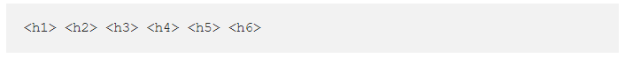
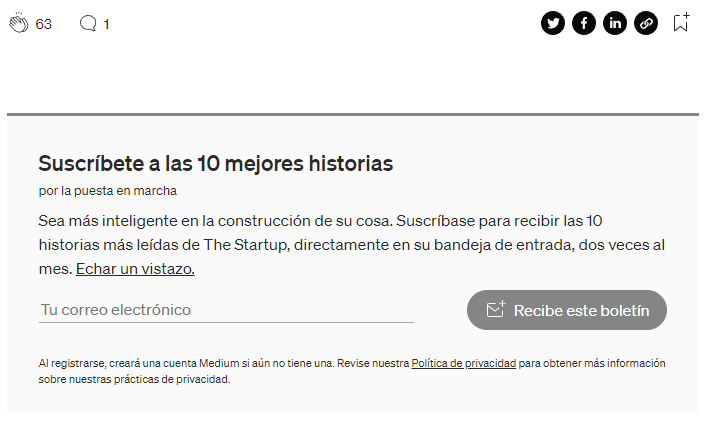

Mejores prácticas de etiquetas de encabezado HTML

Los elementos HTML son una parte importante del SEO en el sitio. Los algoritmos de Google consideran elementos de encabezado HTML junto con el contenido para comprender la estructura, el tema y el propósito de su contenido. Este artículo intenta explicar los mitos, los conceptos básicos y las mejores prácticas para el uso de etiquetas de encabezado (H1-H6).
¿Qué es un encabezado?
En un documento HTML o página web, como diríamos, se utiliza un encabezado para introducir el contenido que sigue.
Las etiquetas de encabezado tienen una jerarquía de arriba hacia abajo de h1 a h6
HTML define seis niveles para los encabezados.
h1 se utiliza para definir el encabezado más importante. h6 se utiliza para definir los encabezados menos importantes.
¿Por qué son importantes los encabezados HTML?
Como dice la cita anterior de John Mueller, el encabezado HTML puede afectar la clasificación de su página, tanto directa como indirectamente.
Directo: Google usa encabezados para comprender y dar sentido a nuestro contenido. Si se coloca una buena estructura,
ayudará a Google a hacer coincidir su contenido con las frases de búsqueda que sus visitantes colocan en el motor de búsqueda de Google. Ayudar a Google es ayudarte a ti mismo, posicionarte en Google.
No directo : los elementos de encabezado HTML crean una experiencia para sus usuarios. Los encabezados presentan su contenido a sus visitantes. Los encabezados ayudan a los visitantes a ubicar lo que están buscando (skimming).
Los encabezados ayudan a los visitantes a permanecer en su página (mejor tasa de rebote).
Los encabezados bien explicativos y honestos forman una buena experiencia de usuario.
A medida que Google se está moviendo hacia la experiencia del usuario, esto puede ayudar a que su página se clasifique mejor.
Los encabezados son importantes.
- Úselos según sea necesario.
- Haz una investigación completa y utiliza las palabras clave adecuadas.
- Haz una investigación completa y utiliza las palabras clave adecuadas.
- No, no, no hagas “relleno de palabras clave” . Es una completa pérdida de tiempo a partir de 2018.
- Manténgalos relevantes para su contenido.
- Manténgalos naturales siempre que sea posible.
¿Cómo puedo ver elementos de encabezados HTML en mi página web?
Usando Ver código fuente HTML: usando el navegador Google Chrome, haga clic con el botón derecho en una página HTML y seleccione "Ver código fuente de la página" (para IE - Ver código fuente).
En la ventana que se abre, use CTRL + F y escriba la etiqueta de encabezado HTML, está buscando "h1" - "h6".
Mediante el uso de Inspeccionar un elemento HTML: con el navegador Google Chrome, haga clic con el botón derecho en un elemento y elija "Inspeccionar". Esto abrirá un panel lateral y podrá ver HTML y CSS para ese elemento.
Mediante el uso de herramientas:
Hay muchas herramientas en el mercado, pero las más destacadas son:
- SEMRush
- Rastreador de SiteBulb
- Rastreo profundo
- Rana Gritando
- Paquete de potencia de SEO
Hay una pequeña pero muy productiva herramienta de vista previa de etiquetas de título que suelo usar para verificar cómo aparecerán mis encabezados de título en los resultados de búsqueda de Google: Herramienta de vista previa de etiquetas de título
